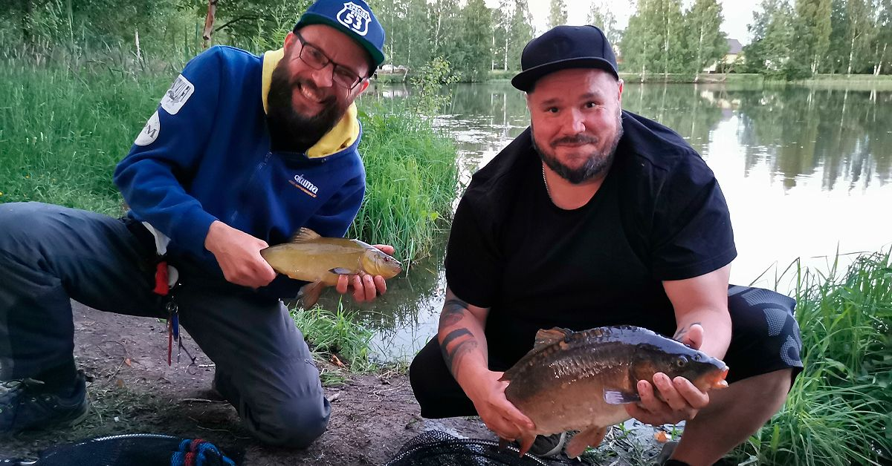
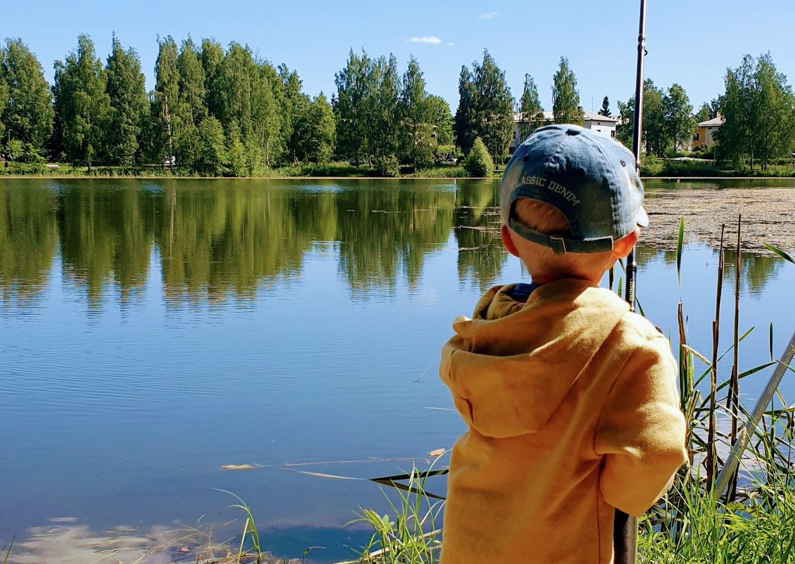
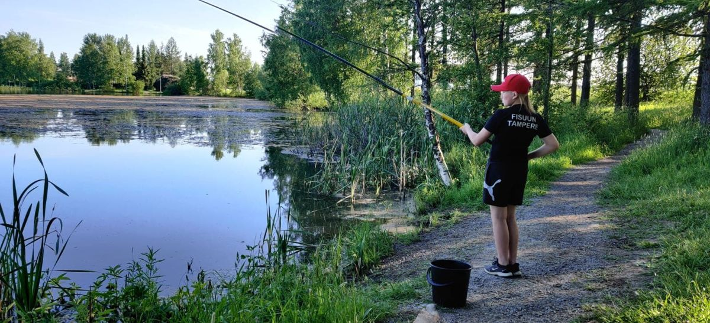
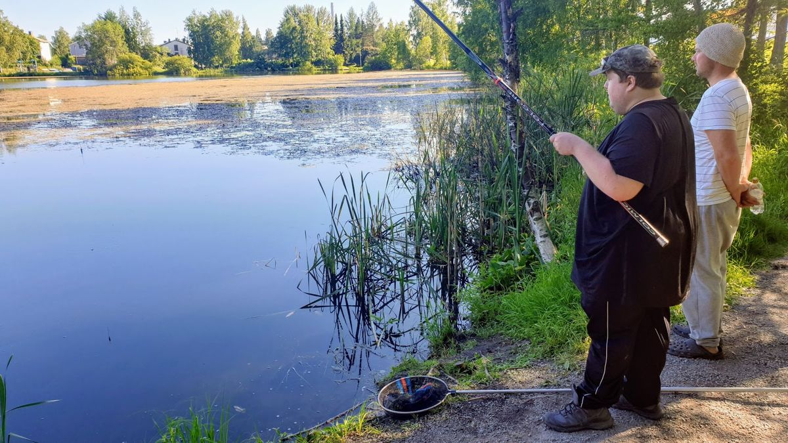
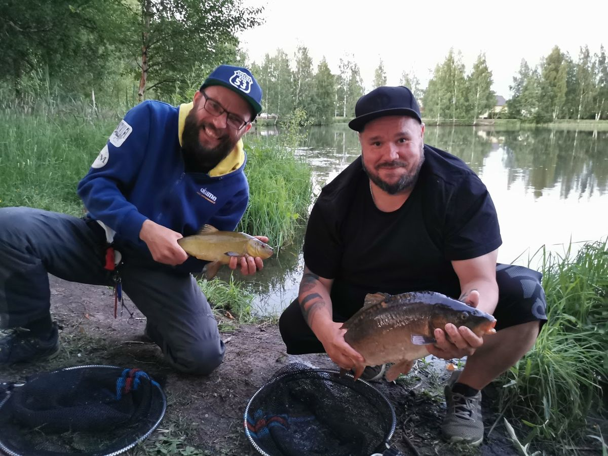
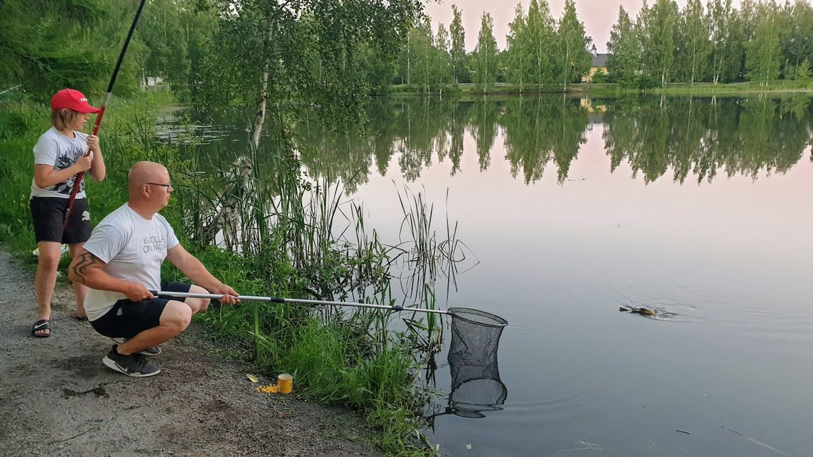
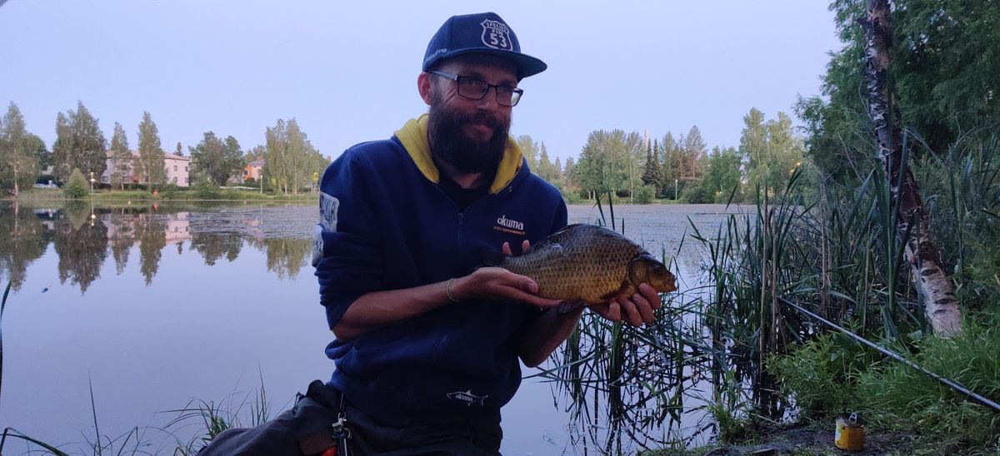
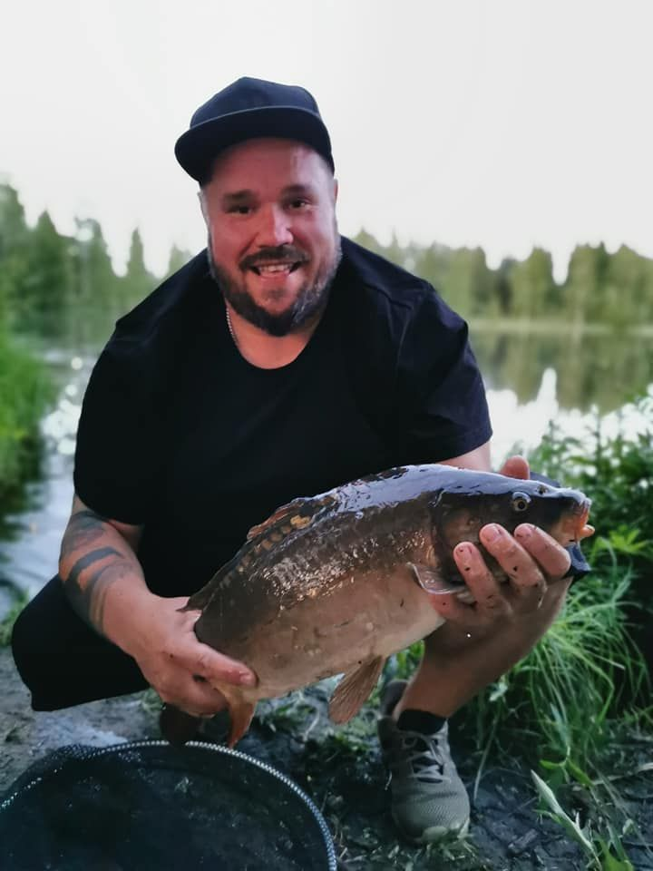
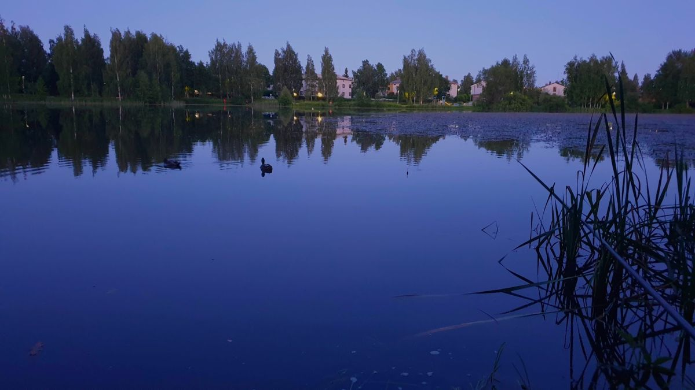

Blogitekstit · Kesäkuu 2020
Elämyksiä keskellä Tamperetta - Pahalampi onkipaikka vailla vertaa
Kaupallinen yhteistyö: Paitakulma.fi


Kävimme Timin ennätysvuotena 2018 karppipisteet onkimassa lajiksi nro. 40 Tampereen Pahalammella. Tuolla reissulla tutustuimme myös lammen ”isäntään”. Tämä rempseä kalastaja oli nimeltään Pekka Rintamaa, ammattikalastaja ja taitava kilpaonkija Tampereelta.
Nyt tarjoutui majoitusvaihtoehtona siskon pojan ja hänen naisystävänsä tyhjillä oleva asunto, joka sattumoisin vielä sijaitsi lammen lähellä. Ei tätä tarjousta voinut jättää käyttämättä, lajeja, joita voisi tavoitella oli karpin lisäksi puronieriä sekä toutain. Tampereelle lähdettäessä tilanne oli se, että lajeja oli kasassa 49.
Tampereella sijaitseva Pahalampi on varmasti yksi Suomen tunnetuimpia onkilampia. Pekan alulle panema onkipaikka on todella suosittu, jossa erityisesti nuoret kalastajat saavat ikimuistoisia hetkiä onginnan parissa.
Suuret suutarit, ruutanat ja muu kalalajisto on suurilta osin lammen luontaista kalastoa, mutta karpit ovat istutuksista peräisin. Aikoinaan alueen historian takia lammen pohjaan on kertynyt raskasmetalleja ja muita ongelmia, joiden takia kalasto on taloudellisesti mahdotonta hyödyntää.


Pekka oli kuullut joskus joltain ”alkuasukkaalta”, että savea siitä otettiin ja pohjalla oli jalkapallokenttä. Silloin Pyhäjärven lahti oli ulottunut miltei lampeen, jossa oli silloin ollut miljoonittain pikkusia ruutanoita. Sitten lahti täytettiin ja tiilisaven oton yhteydessä joku rouhaisi liian syvään, lampi syntyi yhdessä yössä ja puusto jäi vedenalle ja koneetkin, jotka sittemmin poistettiin.
Kalastuspaikaksi syntymisen idea sai alkunsa kun, Pekka ajoi pyörällä ohi ja hän näki isoja ruutanoita kudulla.
”Aika pian huomattiin, että tässä voisi olla hyvä paikka onkilammelle ja tuotiin lampeen saavilla suutareita. Sitten tuli kalastajat ja söi ne meitin kalat.
Sen jälkeen soitin kaupungilla toimivalle Tuomisen ja alettiin yhdessä järjestämään rauhoitusta ELY-keskukselle, siitä se lähti ja aloimme istuttamaan lisää mm. karppeja.” -Pekka Rintamaa
Osta tästä Pahalammen kalastuslupa ja lue kalastusmääräykset.
Kalastusta varten on hankittava kalastuslupa. Lupia myydään kalenterivuodeksi. Luvan hinta on
10 € / vuosi. Alle 18-vuotias ei tarvitse lupaa, mutta muutoin kalastuksessa on noudatettava
alueen kalastussääntöjä. Kalastuslupa tulee esittää kalastuksenvalvojalle pyydettäessä.
Pahalampi tarjoaa elämyksiä – fongareille useita lajeja


Karpin kalastus on ”pienen” piirin harrastus, josta ei hiiskuta kuin vannoutuneille lajien harrastajille. Esisyöttöä ja työ uusien kalapaikkojen löytämiseksi on vuosien tutkimuksien tulos ja lopussa kiitos seisoo. Suomessa lajin saloja videoiden muodossa ovat avanneet esimerkiksi Urpoerämies Production ja Siloneula Fishing Team.
Pahalampi ja Myllykosken Ponni on tunnettuja karppipaikkoja, joiden karpeista voi puhua ja kertoa muille. Molemmissa voi paukkua kymmenen kilon raja rikki ja voi siiman päähän osua niitä todellisia ”vetureitakin”. Lammen kalasto saa upeita bonusfisuja Pekan toimesta. Lammessa on mm. useamman kilon painoisia ruutanoita, säyneitä, lahnoja ja muita särkikaloja.
Kysyin tätä juttua tehdessä Pekalta, mikä on parasta työssä Pahalammen kalapaikan eteen tehdyssä talkootyössä.
”Parasta? Oikein sydän sykähti, kun näin viimeviikolla isän lapsensa kanssa onkimassa, annoin parit pikku vinkit isälle, kun niitä kysyi ja toivotin onnea. Poika istui rullatuolissa ja kun pääsin lammen toiselle puolelle, kuului molskintaa ja riemun kiljaisuja. Meinasi tulla pala kurkkuun.” -Pekka
On päivänselvää, että Pahalammen kaltaisia kalapaikkoja tarvitaan Suomessa. Näillä koetut elämykset saa nuoret innostumaan onginnasta ja sitä kautta kalastuksesta harrastuksena. Btw, tuo poika ja isä parivaljakko löytyy Instagramista. https://www.instagram.com/fishingboywithwheelchair/
Hienoa työtä Pekka ja muut lammen eteen töitä tekevät sekä kiitos Tampereen kaupungille, että lammen eteen on tehty näin uskomattoman hienoa työtä. Tästä saisi moni kaupunki ottaa mallia.
Helteessä kalastusta - isoja kaloja


Iltapäivästä Harri saapui seurakseni lammelle Lievestuoreelta, hakusessa hänelle elämänpiste karpista ja vuosipiste suutarista.
Mukana lammella oli perheeni ja tämä hieman hankaloitti kalastamista ja siihen keskittymistä. Odotan kyllä innolla niitä hetkiä, kun pojan kanssa pääsee kunnolla kalastamaan ja vapa pysyy hänen omassa kädessänsä eikä isin tarvitse sitä kokoajan pitää.
Kävin viemässä hieman neljän jälkeen perheeni kämpille ja hain samalla lisää maissia sekä hieman purtavaa paikallisesta Prismasta.
Tämän käynnin aikana Pekka oli saapunut lammelle isänsä kanssa ja saimme viimehetken tipsit kalojen pyyntiin. Ei siinä montaa hetkeä mennytkään, kun ensimmäiset kalat olivat ylhäällä; lahna ja vähän myöhemmin suutarista lajipiste Harrille.
Pekan lähdön jälkeen tarrasi Harrin onkeen kala, joka ei antanut armoa. Vapa kaarelle ja naps siima katki. Hetken harmittelimme tätä ja lähdimme pois, Harri kohti Lievestuoretta ja minä kohti Ellivuoren toutainvuolteita.
Karppi vs minä – otto kaksi


Klaffi napsahti, olin jälleen Pahalammen viereisellä parkkipaikalla. Ensimmäisen erän vei kalat 10-0. Onneksi Harri sai edes suutarin, oman saaliini jäädessä muutamaan lahnaan.
Toutainreissulta palatessa lammelle oli väki lisääntynyt. Tunnistin jo kaukaa auringonvalaiseman kiiltävän päälaen; Jyri Haapanen se siellä poikansa Benskun, Mikko Salosen ja Ville Turpiaisen kanssa olivat ongella.
Heidän vieressänsä lisäksi joukko muita junioreita. Jyri on tullut tutuksi Fisuun Tampereen kalastusohjaaja ja Hauenkalastajat nimisen Facebook ryhmän perustajista yhdessä Mikon kanssa.


Tututtuun tapaan Ville oli koukuttanut lähestulkoon kaikki lammen kalalajit näytöstyyliin ja heti hänen vanavedessänsä seurueemme juniori, mutta selvästi meistä kovin Kalamies Bensku koukutti suutareita ja pääsin näkemään myös hänen peilikarpin saamisen.
Kaloja oli tontilla, nyt sellainen pitäisi vain saada oman siiman päähän.
Upeita hetkiä koettiin yön pimeimpänä hetkenä, kun Mikon onki taipui tärpistä kaarelle.
”No nyt on iso”, kuuluu vasemmalta ja katsomme kaikki hämmästyneenä, kuinka kevyt sekoitekuituvapa taipuu kaarelle siiman vingunnan säestäessä vavan joustoliikkeitä.
Nyt on iso!
Lopulta noin viisi minuuttia kestäneen ”ensispurtin” jälkeen kala tulee näytille; KARPPI ja iso sellainen.
Muutaman huti haaviamisen jälkeen kala sujahtaa Jyrin toimesta pussukan pohjalle. Siinä me hetken tuijottelimme kalaa ja otimme ryhmäkuvan kokoonpanolla; Mikko & Kalle, Minä & Suutari.
Ikuistuksen jälkeen Mikon elämänpiste karppi sai vapautensa. Kala lipui ylväästi kohti Pahalammen pimeää pohjaa, odottamaan hetkeä, jolloin nappaa seuraavaan syöttiin.


Itse pääsin ikuistamaan kesäkuun toisen suurkalan, kun 1,380 kg ruutana nappasi syöttiini. Upea kala, joita uiskenteli koko illan seurana rantamatalikossa, kasvillisuus vaan heilui ruutanoiden ruokaillessa niiden väleissä.


"Kyllähän se yllätti, miten vahva kala se oli. Hieno tunne ongen päässä. Sai haluamaan lisää tunnetta ja jännitystä."
-Mikko Salonen
Taisi samalla paatuneen haukimiehen sydän ihastua ongintaan ja ollaan jo yhden hetken lähempänä toista onkireissua?
Yö tuli ja meni. Sain seurata upeaa näytelmää, minkä päätähtenä oli lammen kalat. Rannan tuntuman ruutanat, suutariparvet ja yksittäiset upeat karppien näyttäytymiset kannustivat jatkamaan pitkälle aamuyöhön.


Yön kohokohta ja kliimaksi koettiin, kun seitsemän metrin hiilikuitu onkeni huusi armoa. Jumalaton kala pisti sellaisen alkuspurtin, ettei ollut siimalla, eikä vavalla mitään saumaa ja lopputuloksen voi jokainen arvata; kala vei voiton. Siinä taisi olla se minun karppipisteeni hetken kiinni.
Loppu yö meni ihmetellessä suutareiden kauneutta, lahnojen ahneutta ja lintujen laulua. Yön hiljentyessä hiljaisuuden rikkoi vain junaradan kolina tai satunanisesti ohi ajavat autot.
Tässä Pekan varoituksen sana liian ohuiden siimojen käyttäjille;
”Ensi kesänä nuo karpit pistää teleskooppi vavat poikki ja pinoon. Kasvuvauhti on vuodessa noin 1,5 kg on normaali painonlisäystä tuossa lammessa. 4+ kalat pistävät jo niin rajusti kampoihin, että kelavermeitä tai kumpparionkia kaipailee."– Pekka
Seuraa ennätyksen etenemistä
Pidän kirjaa lajilistasta ja tarkemmasta retkidatasta Google -taulukossa, joka löytyy jokaisesta ennätysyrityksen postauksesta. Tästä linkistä taulukko avautuu uuteen ikkunaan.
Seurantatilanne löytyy myös blogini oikeasta yläreunasta.
Vuoden aikana ennätysyrityksessä kulkee mukaan myös tämä kalataitelija-graaffikko Sakke Yrjölän suunnittelema SPECIES FIN 53 -merkki.
Paitakulmassa painatin pipoon ja lippikseen saman merkin. Tavoitteeni on saada aikaiseksi 53 saaliskuvaa tekstin alussa tekemääni taulukkoon joissa kaikissa kuvissa näkyisi tuo kyseinen tunnus.
Paitakulma on Suomalainen perheyritys, joka haluaa panostaa laatuun ja asiakastyytyväisyyteen. Tutustu yrityksen palveluihin tästä.
Pahalampi Pekka Rintamaa ruutana SpeciesFIN53 suurkala suutari Tampere